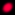

Color Key
This document is part of the
MUD Resource Collection
.
Last update:
All the links within the MUD Resource are color-coded using the scheme below, based on what type of MUD flavor and set of interests the link is most relevant for.
All MUDs; general interest
All MUDs; research/education
All MUDs; client
 LP-MUD
MUSH/MUX
MOO
Graphical MUDs
Other MUD flavors and MUD-related media forms